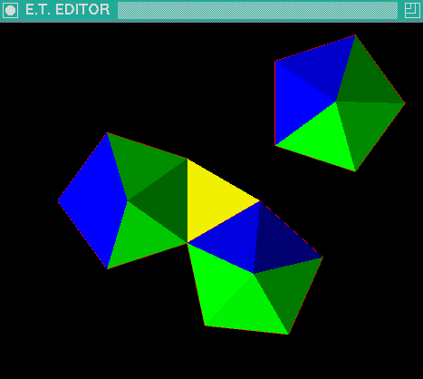

Constructing icosahedron
-
Create two regular triangles (< Shift >+< O>)
and move them (< Alt >+< Arrows >)
so that they are in distinct places,
and one pentagon (< Alt >+< O>).
-
Scale the pentagon so that the length of its side
is the same as the length of the triangle side:
-
Place points A,B and C,D on two endpoints of the sides
of the triangle and the pentagon, respectively.
(Move the cursor close to the vertex and jump to it with < F> key.
Then press one of < F3 > < A >, < F3 > < B >,
< F3 > < C > or < F3 > < D > key sequences)
-
Press the key sequence < F4 > < S >.
-
Transform the triangles so that they are aligned to the
two subsequent sides of the pentagon as on the following screen-shot.
It can be done with two three-point transformations (< F4 > < T >)
with the points AB on two endpoints of the transformed triangle,
C one step above A,
and the points DE on two endpoints of the side of pentagon,
F one step above D.
-
Fold the triangles around the sides of pentagon
(< F4> < Ctrl>+< F>).
-
Add remaining sides of the pyramid
(the green triangles on the following screen-shot).
Use < F > to locate vertices and < T > to insert
endpoints of triangles.
-
Make two copies of the pyramid (< F1 > < C >)
and new triangle.
Align two pyramids to the sides of the triangle.

-
Fold the aligned pyramids
-
Use three-point transformation to place the third pyramid
as on the following screen-shot.
-
Add the missing walls (the white triangles on the following screen-shot).
-
Extract all objects to a single group
(< F1 > < E >)
-
Remove empty groups
(< F1 > < Z >)
-
Reduce vertices in the current group
(< F5 > < V >).
Verify that the number of vertices after reduction is 12.
If the number of vertices is greater,
then input greater reduction epsilon (< F5 > < 1 >)
and repeat vertex reduction.
-
Move the center of the icosahedron to the point (0,0,0) as follows:
- Move the cursor to the center of current group (< F4> < C>).
- Switch context to et0 (< E >).
- Move the cursor to the point (0,0,0) (< Ctrl >+< R >).
- Move the current group by the vector (cursor-et0_marker)
(< F1 > < V>)
- Switch context to default context (< Esc >).
-
Remove edges from current group (< F1 > < Alt >+< X>).

-
You may paint all triangles with current color
(< F1 > < Shift >+< P>)